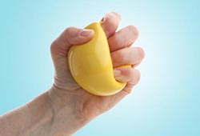

ေလ့က်င့္ ခန္း( ၄)

၄။ ေလ့က်င့္ ခန္း ၄ က ေတာ့ တံခါး လက္ ကိုင္ ဘုလံုး လွည့္ ဖြင့္ တဲ့အခါ၊ လက္ ထဲက အရာ ေတြ အလြယ္ တကူ ျပဳတ္ မက်ခ်င္ တဲ့အခါ မ်ိဳး အတြက္ ပါ။
ေဘာလံုးအ ေပ်ာ့တစ္ လံုး ဆုပ္ ကိုင္ ပါ။ ျပီးရင္ ထုိ ေဘာလံုးကို ညွစ္ ႏိုင္ သမွ် ညွစ္ ပါ။
စကၠန္႔ အနည္း ငယ္ ေလာက္ ၾကာမွ လႊတ္ ပါ။
၁၀ၾကိမ္ ၁၅ၾကိမ္ ခန္႔ ျပဳလုပ္ ပါ။
တစ္ ပတ္ မွာ ၂ခါ - ၃ခါ သာ ျပဳလုပ္ ျပီး ၁၅ၾကိမ္ ၁ခါျပီးတိုင္း ၄၈နာရီ နားပါ။ လက္ မ ထိခိုက္ ေနသူမ်ား မျပဳလုပ္ ရ။